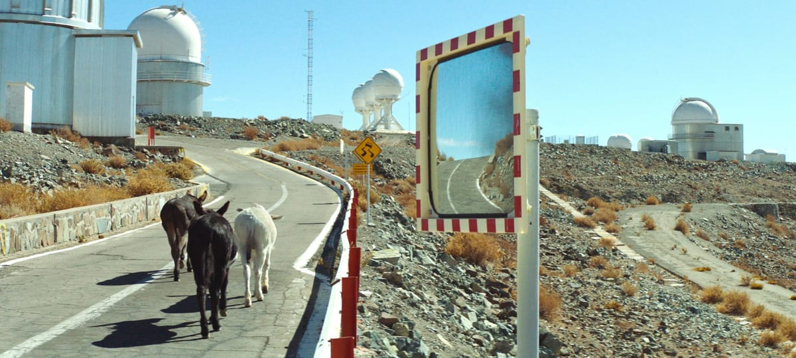

Entre o instinto e o infinito: o estranhamento em Perfectly a Strangeness
Perfectly a Strangeness (Alison McAlpine, 2024) organiza-se como um curta experimental e sensorial, sem diálogos, em que o deslocamento de animais pelo deserto culmina no encontro com um observatório astronômico. Seu maior mérito está na fotografia, que converte a paisagem em um campo de tensão entre presença física e imaginação cósmica. A imagem, aqui, não ilustra apenas uma narrativa: ela produz percepção. Por meio de enquadramentos rigorosos, contrastes de luz e uma atenção incomum à escala, o filme constrói uma experiência de estranhamento diante do visível. Trata-se de um cinema menos voltado à explicação do que à contemplação, fazendo da duração e do silêncio elementos essenciais de sua força expressiva. O espectador não é conduzido por uma lógica dramática tradicional, mas por uma sucessão de sensações, ritmos e impressões visuais que exigem uma postura mais ativa diante da obra.
Nesse sentido, a obra articula uma dualidade entre o natural e o científico. Os animais e a aridez do deserto remetem a uma dimensão instintiva, terrena e anterior à razão, enquanto o observatório simboliza o impulso humano de investigar, medir e traduzir o universo. O filme, porém, não resolve essa oposição de maneira simples. Ao contrário, mostra que tanto a natureza quanto a ciência conduzem ao mesmo limite: o do mistério. Há algo de profundamente irônico e poético nesse encontro, pois o aparato científico, criado para esclarecer o cosmos, termina recolocando o ser humano diante de sua própria pequenez. Assim, Perfectly a Strangeness reafirma um cinema em que ver é também confrontar aquilo que escapa ao entendimento. A estranheza do título, portanto, não aparece como efeito gratuito, mas como princípio estético e filosófico de uma obra que transforma imagem em reflexão.